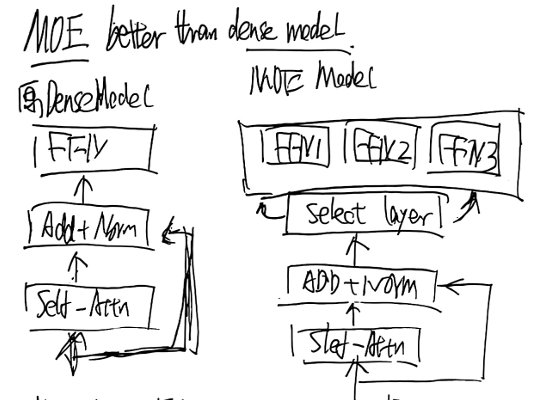

好的，我将扮演一名手写笔记识别专家，对这份《从头开始构建大模型》课程的笔记进行识别、整理和补充。
第一页笔记分析与重构
本页笔记核心内容涵盖了大型模型（LLM）的三个基础构建模块：分词器 (Tokenizer)、计算量 (FLOPs) 的估算，以及训练过程中的 内存 (Memory) 与 计算 (Compute) 考量。
1. 分词器 (Tokenizer)
分词是将原始文本字符串转换为模型可以理解的数字序列（Token IDs）的过程。笔记中对比了不同类型的分词策略。
-
基本概念:
- 词元 (Word-based): 直接使用词作为基本单位。
- 优点: 符合人类直觉。
- 缺点: 词汇表规模 (Vocab size) 会非常庞大，无法处理未登录词 (Out-of-Vocabulary, OOV)，且无法体现词根、词缀等关系。笔记中提到 “word - local not given”，可能指基于词的分词无法很好地处理局部或罕见的词汇组合。
- 字节 (Byte-based): 将文本视为原始的字节流进行切分。
- 优点: 词汇表规模小（仅256个），没有OOV问题。
- 缺点: 压缩率低 (compress ratio)，生成的序列非常长，增加了模型处理的负担。
- 词元 (Word-based): 直接使用词作为基本单位。
-
字节对编码 (Byte Pair Encoding, BPE) :
BPE 是一种在词元和字节元之间取得平衡的子词 (subword) 算法，也是现代 LLM（如 GPT 系列）中最主流的分词算法之一。
- 核心思想: 算法从字符/字节级别开始，迭代地将最常出现的相邻子词对合并成一个新的、更大的子词，并将其加入词汇表。
- 流程:
- 初始化: 将词汇表初始化为所有基本字符（例如 UTF-8 的字节）。
- 分词: 将文本切分成字符序列。例如，
"hugging"变为['h', 'u', 'g', 'g', 'i', 'n', 'g']。 - 迭代合并: 在语料库中找出出现频率最高的相邻子词对，将其合并成一个新的子词。例如，如果
'gg'出现频率最高，就合并成'gg'，词汇表增加'gg'，序列变为['h', 'u', 'gg', 'i', 'n', 'g']。 - 重复: 不断重复步骤3，直到达到预设的词汇表大小或满足停止条件。
2. 计算量 (FLOPs) 估算
FLOPs (Floating Point Operations) 是衡量模型计算复杂度的关键指标。
-
训练过程中的 FLOPs : 对于 Decoder-only 的 Transformer 模型（如 GPT），一次完整训练（一次前向传播 + 一次反向传播）所需的总计算量有一个广为接受的估算公式：
Where :
- : 模型的参数量。
- : 训练数据的总 Token 数量。
- 系数 “6” 的来源: 这是一个工程近似值。
- 前向传播: 大约需要 FLOPs。主要来自于矩阵乘法。
- 反向传播: 大约需要 FLOPs，通常是前向传播的2倍，因为它不仅要计算梯度，还要处理链式法则。
-
矩阵乘法 (MatMul) 的 FLOPs :
矩阵乘法是 Transformer 中最主要的计算开销。对于两个矩阵 X∈RM×K 和 W∈RK×N 相乘，其计算量为：
- 系数 “2” 是因为每个元素的计算都包含一次乘法和一次加法。
3. 内存与计算考量
-
模型 FLOPs 利用率 (MFU) :
这是一个衡量硬件（如 GPU）计算效率的指标。
- Actual FLOPs: 模型在实际运行时达到的 TFLOPs/s。
- Theoretical Peak FLOPs: 硬件供应商标注的理论峰值 TFLOPs/s。
- MFU 越高，说明对硬件算力的利用越充分。
-
内存占用 (Memory Footprint):
模型训练时，数据需要在不同设备间传递。主要的内存开销来自于张量（Tensor）的存储。一个张量占用的内存由其元素数量和数据精度决定。例如，一个使用 FP32（32位浮点数，即4字节）精度的张量，其内存占用为：元素数量 * 4 bytes.
数据精度 (Precision):
- FP32 (单精度): 传统的浮点数格式，精度高但计算和内存开销大。
- FP16 (半精度): 精度较低，但能显著减少内存占用和加速计算。缺点是其表示的数值范围（动态范围）有限，容易出现上溢或下溢。
- BFloat16 (BF16): 为了弥补 FP16 的不足而设计。它牺牲了一部分尾数精度，以换取和 FP32 一样的指数位。这使得 BF16 拥有与 FP32 几乎相同的动态范围，更适合深度学习训练，能有效避免溢出问题。笔记中提到的 “bfl6 better than fpl6, 增加指数” 正是指这一优势。
好的，我們來詳細解析講義中關於優化器 (Optimizer) 的部分。以下內容完全基於您提供的 lecture_02.py 文件。
優化器的作用 (以 AdaGrad 為例)
優化器的核心作用是根據計算出的梯度來更新模型的參數，目標是讓模型的損失函數 (loss) 越來越小。
最基礎的優化器是隨機梯度下降 (SGD)，它的更新規則非常簡單：新參數 = 舊參數 - 學習率 * 梯度。然而，在複雜的訓練過程中，為所有參數使用固定的學習率可能不是最高效的。
講義中以 AdaGrad 為例，展示了更進階的優化器如何工作。AdaGrad 的全稱是 “Adaptive Gradient Algorithm”，它的關鍵特性是為模型中的每一個參數獨立地調整學習率。
根據講義中提供的 AdaGrad 程式碼實現，其運作機制如下：
- 維護一個「狀態 (state)」：
AdaGrad會為每一個參數p維護一個名為g2的狀態變數。這個g2用於累加該參數歷史所有梯度的平方和。 - 更新狀態：在每一步更新時，它會先取得當前的梯度
grad，將其平方後累加到g2中 (g2 += torch.square(grad))。 - 自適應更新參數：參數的更新公式為
p.data -= lr * grad / torch.sqrt(g2 + 1e-5)。- 核心思想：分母中的
sqrt(g2)會調節實際的學習率。如果一個參數的歷史梯度一直很大，它的g2就會很大，從而導致分母變大，實際的學習率就會減小。反之，如果一個參數的歷史梯度很小，它的g2就會小，實際學習率就會增大。 - 效果：這使得優化器能夠在梯度較大的維度上更謹慎地更新（防止步子太大邁過頭），在梯度較小的維度上更大膽地更新（鼓勵參數繼續學習）。
- 核心思想：分母中的
講義中也提到了一個優化器的演進層次關係：SGD -> AdaGrad -> RMSProp -> Adam，Adam 是目前最常用的優化器之一，它結合了 RMSProp (AdaGrad 的變體) 和動量 (Momentum) 的思想。
笔记补充：一個完整訓練步驟中的記憶體組成
假設我們使用 32 位浮點數 (float32)，每個數值佔用 4 bytes。
- 模型參數 (Parameters)
- 這是模型本身的權重和偏置，是模型需要學習的核心。其大小由模型架構決定，在訓練過程中是固定的 (
num_parameters)。
- 這是模型本身的權重和偏置，是模型需要學習的核心。其大小由模型架構決定，在訓練過程中是固定的 (
- 梯度 (Gradients)
- 在反向傳播 (
loss.backward()) 後，會為每一個模型參數計算一個梯度值。因此，梯度的數量和模型參數的數量完全相同 (num_gradients = num_parameters)。這部分記憶體用於暫存梯度，以便優化器後續使用。
- 在反向傳播 (
- 優化器狀態 (Optimizer States)
- 這是像
AdaGrad或Adam這樣的自適應優化器需要的額外記憶體。 - 以
AdaGrad為例，它需要為每個參數儲存一個g2(歷史梯度平方和)，所以它需要和參數一樣多的額外儲存空間 (num_optimizer_states = num_parameters)。 - (講義註：對於更常用的
Adam優化器，需要儲存兩份狀態：一階動量和二階動量，所以其狀態記憶體大約是參數量的兩倍。)
- 這是像
- 活化值 (Activations)
- 這是在前向傳播過程中產生的中間計算結果（例如
h1 = x @ w1）。 - 這些中間結果必須被儲存，因為在反向傳播計算梯度時會被用到（鏈式法則）。
- 活化值的記憶體大小與批量大小 (batch size)和序列長度直接相關，而不僅僅是模型大小。這是訓練大模型時一個非常重要的記憶體瓶頸。
- 這是在前向傳播過程中產生的中間計算結果（例如
總結來說，在一個訓練步驟中，總的記憶體消耗可以估算為：
Total_memory = 4 * (num_parameters + num_gradients + num_optimizer_states + num_activations)
好的，现在开始分析第二页的笔记。
本页笔记的核心主题是模型量化 (Quantization)，这是一种关键的模型压缩与优化技术，旨在降低模型的计算和存储开销。
1. 量化的基本思想
量化的核心是将模型中高精度的数据类型（通常是32位浮点数，FP32）映射到低精度的数据类型（例如，8位整型，INT8）。
- 目标: 量化模型中的权重 (Weights) 和激活值 (Activations)。
- 优势:
- 减少内存占用: INT8 只需 FP32 四分之一的存储空间。
- 加速计算: 硬件对整型运算的支持通常比浮点运算更快、更节能。
- 挑战: 将连续的浮点数映射到离散的整数，必然会引入精度损失（量化误差）。量化技术的目标就是最小化这种误差。
2. 均匀量化（Affine Quantization）
笔记中给出了最常用的一种量化方法——均匀仿射量化的核心公式。
这个过程可以理解为对一个浮点数区间进行“平移和缩放”，以映射到目标整数区间。
Xfloat: 原始的 FP32 值。Xint: 量化后的 INT8 值。- S (Scale, 缩放因子): 一个正的浮点数，决定了量化的粒度或精度。它将浮点数的范围映射到整数的范围。
- Z (Zero-point, 零点): 一个整数，确保原始浮点数中的 0 能够准确地映射到量化后的整数域中的某个值。
- round(⋅): 将结果四舍五入到最接近的整数。
clip(⋅,qmin,qmax): 将结果截断在目标整数类型的范围内（例如，对于 INT8，范围是[-128, 127]）。
3. 量化策略分类
笔记中提到了两种不同的分类维度：
维度一：根据映射方式
-
均匀量化 (Uniform Quantization): 如上述公式所示，量化步长（由缩放因子 S 决定）在整个数值范围内是恒定的。这是一种简单高效的方法。
非均匀量化 (Non-uniform Quantization): 量化步长不是固定的，可以根据数据的实际分布进行调整。例如，在数据密集的区域使用更精细的量化步长，在稀疏区域使用较粗的步长。这种方法通常能更好地拟合呈现非均匀分布（如高斯分布）的权重和激活值，从而获得更高的精度，但实现也更复杂。
维度二：根据应用时机
-
后训练量化 (Post-Training Quantization, PTQ): 这是一种简单快捷的量化方法。它在模型已经完成标准 FP32 训练之后进行。只需少量校准数据集来计算权重和激活值的缩放因子 (S) 和零点 (Z)，无需重新训练模型。
-
量化感知训练 (Quantization-Aware Training, QAT): 这种方法在训练过程中就“模拟”量化操作。具体来说，它在前向传播中模拟量化和反向传播中的舍入误差，让模型在训练时就适应量化带来的精度损失。QAT 通常能达到比 PTQ 更高的模型精度，但代价是需要完整的训练流程和数据，计算成本更高。
此外，笔记开头的
动态量化 (Dynamic Quantization) 与 静态量化 (Static Quantization) 是 PTQ 的两种主要形式：
-
静态量化: 激活值的缩放因子和零点是通过一个校准数据集提前计算好的，在推理时直接使用。
-
动态量化: 权重量化是离线的，但激活值的量化是在运行时（on-the-fly）动态计算的。这为不同输入提供了更精确的缩放因子，但带来了额外的计算开销。
-
好的，我们继续分析第三页的笔记。
这一页的笔记内容非常丰富，从训练的工程实践细节，深入到了 Transformer 模型的各种架构变体和关键组件的选择，反映了构建和优化现代大模型的深度考量。
1. 训练的工程实践与考量
-
参数初始化与随机种子 (Parameter Initialization & Random Seed)
-
为了保证实验的可复现性，需要在代码中固定所有可能的随机源。笔记中列举了三个关键部分：
torch.manual_seed、numpy.random.seed和random.seed。 -
一个良好的初始化策略（如 Kaiming He 或 Xavier 初始化）对于训练初期的稳定性至关重要。
-
-
FLOPs vs. 实际运行时间 (Runtime)
-
笔记中有一个非常深刻的观察：计算量 (FLOPs) 和实际运行时间并非完全成正比。
-
案例1: 矩阵乘法虽然占据了模型 99% 的 FLOPs，但其运行时间可能只占 60%，这是因为现代 GPU 对大规模并行计算（如矩阵乘法）做了极致优化，硬件利用率非常高。
-
案例2: 归一化操作 (Normalization) 的 FLOPs 占比极低（如 0.1%），但其运行时间可能高达 25%。这是因为这类操作涉及大量的逐元素读写和归约 (reduction) 操作，会频繁访问内存，成为访存瓶颈 (memory-bound) 而非计算瓶颈。
-
-
训练内存占用估算 (Memory Estimation)
-
在 FP32 精度下，使用 Adam/AdamW 优化器训练一个模型，其显存占用可以粗略估算。笔记中的公式可以整理为：
- : 模型参数。
- : 为反向传播而缓存的激活值（大小与模型、序列长度和批次大小相关）。
- : 与模型参数量相等的梯度。
- : 优化器状态。Adam/AdamW 需要为每个参数存储动量 (momentum) 和方差 (variance) 两个状态，因此这部分大小约为 2×。
-
2. Transformer 架构的变体与优化 (Transformer Variations)
-
激活函数 (Activation Function)
-
现代 LLM 已经超越了传统的 ReLU，普遍采用基于门控线性单元 (Gated Linear Units, GLU) 的变体。
-
SwiGLU 是其中最成功的一种，其公式为 ，其中 ⊗ 代表逐元素相乘，而 。这种门控机制被认为能提供更丰富的表达能力。
-
FFN 维度: 传统 Transformer 的 FFN 隐藏层维度通常是模型维度的4倍 (d_ff=4d_model) 。但使用 GLU 变体后，为保持参数量和计算量大致不变，这个比例通常会调整，例如 Llama 模型中使用的比例是 。笔记也鼓励实践者勇于打破常规 (“Be Rule breaker!”)。
-
-
归一化层 (Normalization Layer)
-
位置: 笔记中的图示是 Post-LN 结构，即
[Sublayer] -> Add -> Norm。笔记中提出了一个关键问题：为什么LayerNorm不直接作用在残差连接 (Residual Path) 上？答案是，残差连接的核心是提供一条“恒等映射” (identity connection)，确保信息可以直接流向更深层；而LayerNorm会改变数据的分布，从而“破坏”这种直接的恒等连接。 -
LayerNorm vs. RMSNorm:
RMSNorm是LayerNorm的一个简化版本，它去掉了重新中心化 (re-centering) 的步骤，即移除了均值计算和偏置项 (bias)。这使得其计算量（FLOPs）大大减少，而在实践中发现其性能与LayerNorm相比几乎没有损失，因此在现代 LLM 中被广泛采用。
-
-
位置编码 (Positional Embedding)
- 旋转位置编码 (RoPE) 是目前的主流方案。
- 其核心思想是，通过对词向量进行“旋转”，将绝对位置信息编码到向量的相位中，从而使得两个 token 在经过注意力计算后的得分，仅与其相对位置和内容相关，而与它们的绝对位置无关。这使得模型能更好地泛化到训练时未见过的更长序列。
3. 其他关键超参数
模型“长宽比”: 指模型的深度 (层数) 与宽度 (模型维度 d_model) 的比例，笔记建议这个比例可以在 1:100 左右作为参考。
- 注意力头维度 (
head dim): 每个注意力头的维度也是一个重要的设计选择。 - 词汇表大小 (
vocab size): 词汇表大小会影响模型的嵌入层大小和最终输出层的计算。 - 权重衰减 (Weight Decay): 一种有效的正则化技术，用于防止过拟合，提高训练的鲁棒性。
第四页的笔记分为左右两个部分。左侧主要探讨了标准 Transformer 架构中的一些关键优化技术，特别是在注意力和推理效率方面。右侧则引入了目前非常流行的高效架构——专家混合网络 (MoE)。
1. 标准 Transformer 架构的优化
-
Softmax 稳定性优化
- 在计算注意力分数时，Softmax 函数对非常大的输入值可能会产生数值溢出。一个标准的数值稳定技巧是 z-loss : 这是一个辅助损失项，用于惩罚输出层 Softmax 的 log-normalizer log(Z(x)) 过大。通过将这个值拉向 0，可以有效提升训练的稳定性 。
-
QK-Norm
-
在注意力计算中，QKT 的点积结果可能会变得非常大，导致梯度不稳定或消失，尤其是在模型层数很深或使用低精度训练时。
-
QK-Norm 是一种在前向传播中稳定注意力的技术。其思想是在 Q 和 K 进行矩阵相乘之前，分别对它们进行归一化（通常使用 LayerNorm 或 RMSNorm）。这能有效控制输出的方差，防止数值爆炸。
-
-
推理效率优化：GQA & MQA
- 背景: 在自回归生成（解码）新 token 时，模型需要缓存（Cache）之前所有 token 的键（Key）和值（Value）矩阵，这被称为 K/V Cache。随着序列长度增加，K/V Cache 会占用巨大的显存，成为推理的主要瓶颈。
- 计算强度 (Arithmetic Intensity, AI): 这个指标定义为
浮点运算次数(FLOPs) / 内存访问字节数(Bytes)。在生成 token 时，注意力计算需要从显存中读取庞大的 K/V Cache，但执行的计算量相对较少，因此这是一个典型的 访存密集型（或称计算强度低）操作。 - 解决方案:
- 多查询注意力 (Multi-Query Attention, MQA): 所有注意力头共享同一份 K 和 V 矩阵，极大地减小了 K/V Cache 的大小。
- 分组查询注意力 (Grouped-Query Attention, GQA): 这是 MQA 和标准多头注意力（MHA）的折中方案。它将查询头（Q heads）分成若干组，组内的 Q 头共享一份 K 和 V 矩阵。GQA 在大幅减少 K/V Cache 的同时，相比 MQA 能更好地保留模型性能。
2. 专家混合网络 (Mixture of Experts, MoE)
MoE 是一种旨在用更少的计算量（FLOPs）来激活和利用更大模型参数的架构，其性能通常优于同等计算量的稠密模型 (Dense Model) .

- 核心思想
- MoE 模型将传统 Transformer 中的前馈网络层（FFN）替换为一个“路由-专家”结构 121212。
- 这个结构包含：
- 选择层/路由器 (Select Layer / Router)：负责为每个输入 token 决定应该由哪些专家来处理。
- 多个并行的专家网络 (Experts)：每个专家本身就是一个 FFN。
- 对于每个 token，路由器仅激活少数几个（例如 Top-k）专家进行计算，其他专家则不激活状态。
- 优势 (Advantages)
- 参数量 vs. 计算量: MoE 的关键优势在于它解耦了模型的总参数量和单次前向传播的计算量。你可以在保持计算量（FLOPs）不变的情况下，极大地增加模型的总参数量（知识容量）。
- 性能提升: 在相同的计算预算下，MoE 模型因为拥有更多的总参数，通常能获得比稠密模型更好的性能。
- 劣势 (Disadvantages)
- 通信开销: 在多 GPU/多节点训练中，路由器需要将不同的 token 发送到存储在不同设备上的专家处，这个过程（All-to-All communication）会引入显著的通信延迟。
- 内存开销: 尽管每次只有少数专家被激活，但在训练或服务时，所有专家的参数都必须加载到内存/显存中，这带来了额外的内存开销。
第五页笔记详细探讨了 MoE 模型的实现细节，从其并行计算的优势，到训练中的核心难题——负载均衡，再到具体的路由机制和损失函数设计。
1. MoE 的并行计算模式
- 笔记首先指出了 MoE 的一个关键优势：它天然支持 专家并行 (Expert Parallelism) 。可以将不同的专家（Experts）分布在不同的计算设备（如多个 GPU）上。当一个 token 被路由时，它的数据会被发送到对应的设备上进行计算，然后再将结果返回
- 这种模式在多节点（Multi-node）集群上优势明显，但也带来了复杂的设备间通信问题 (Intra is complex)
2. MoE 的训练挑战
- 路由器的训练是启发式的: MoE 的核心挑战在于如何有效地训练路由器（Router/Selection Layer。路由决策本质上是离散的，难以使用基于梯度的标准方法进行优化。
- 不稳定性: 路由器的训练过程有时会不稳定。笔记中提到，一些看似直观的方法，如强化学习（RL），虽然符合决策制定的思想，但实际效果不佳。而随机探索等方法效果也比较一般。
- 负载不均衡 (Load Imbalance): 这是 MoE 训练中最核心的问题。路由器在训练初期会倾向于将 token 发送给少数几个表现稍好的“明星专家” (celebrity experts) 。这会导致这些专家被过度训练，而其他专家则因缺乏训练数据而“饿死”，最终导致模型容量被浪费，训练不均衡。
3. 路由机制 (Routing Mechanism)
笔记中提到了两种概念上的路由模式：
- Token 选择专家 (Token-chooses-expert): 这是最主流的方式。路由器为每个 token 计算其与所有专家的匹配分数，然后选择分数最高的前 K 个（Top-K）专家来处理该 token 。
- 专家选择 Token (Expert-chooses-token): 一种对偶的思路。每个专家根据自身“特长”，从一批 token 中选择它最需要处理的前 K 个。
4. 负载均衡损失 (Load Balancing Loss)
为了解决不均衡问题，研究者们设计了一种 启发式的辅助损失函数 (Heuristic Loss balancing) 。
- 路由器的工作原理:
- 对于每个 token (t)，路由器会计算一个与所有专家 (i) 的匹配分数（logits），然后通过 Softmax 函数得到一个概率分布 Si,t 15。这个概率可以理解为该 token 与各个专家的匹配程度 16。
- 辅助损失函数:
- 笔记中给出的公式是 ，其中 α 是一个超参数，M 是专家数量。
- fi: 代表在该批次（batch）中，被分配给第 i 个专家的 token 比例（fraction of tokens。
- Pi: 代表在该批次中，所有 token 对第 i 个专家的平均路由概率（average router probability。
- 工作机制:
- 该损失函数的目标是同时最小化 fi 和 Pi 的乘积。
- 如果一个专家被频繁使用（fi 很高），那么损失函数会通过梯度下降来压低路由器分配给它的概率（Pi），从而形成一种“负反馈”。
- 这种机制会鼓励路由器将 token 更均匀地分配给所有专家，从而实现负载均衡。
5. 门控与输出合成
- token 被路由到 Top-K 个专家后，每个专家会独立进行计算（如一个 FFN 网络）。
- 最终的输出是这些专家输出的加权和。权重就是路由器计算出的 Softmax 概率值（gating value。
6. 其他高级 MoE 概念
- 共享专家 (Shared Expert): 对于一些通用且总是被需要的功能，可以设置一些被所有 token 共享的专家。
- 细粒度专家 (Fine-grained Expert): 可以将每个专家的规模做小，但增加专家的总数量，以实现更细粒度的知识划分。
第六页笔记的主题转向了底层硬件和算法优化，具体分为两个部分：左侧介绍了 GPU 和 CUDA 的基本架构，右侧则详细阐述了革命性的优化算法——FlashAttention。
1. GPU 与 CUDA 编程模型
要充分发挥大模型的潜力，必须理解其运行的硬件基础。
-
GPU 硬件层级 (GPU Hierarchy):
- GPU: 整个图形处理单元。
- 流式多处理器 (Streaming Multiprocessors, SMs): 一个 GPU 包含多个 SM。可以将 SM 理解为 GPU 内部独立的核心，负责执行计算任务（“jobs”）。
- 流式处理器 (Streaming Processors, SPs): 每个 SM 内部又包含多个 SP。SP 是最基本的执行单元，负责并行地执行具体的“线程” (threads)。
-
CUDA 工作负载层级:
CUDA 是 NVIDIA 的并行计算平台和编程模型，它将计算任务组织成以下层级：
- Blocks: 线程（Threads）被组织成块（Blocks）。一个 Block 内的线程可以相互协作（例如通过高速的共享内存）。每个 Block 会被调度到一个 SM 上执行。
- Warps: 块（Blocks）中的线程又被组织成线程束（Warps），通常一个 Warp 包含32个线程。
- Threads: 最基本的工作单元。在同一个 Warp 中的线程会以“锁步” (lockstep) 的方式执行相同的指令，但处理不同的数据，这就是所谓的 SIMT (Single Instruction, Multiple Threads) 模型。
-
影响 GPU 效率的关键问题:
- 计算与访存的鸿沟: 现代 GPU 的计算速度（Compute）增长远快于内存带宽（Memory）的增长。这导致许多操作的瓶颈不在于计算本身，而在于等待数据从内存中读取或写入，即所谓的“访存墙”。
- 线程束发散 (Warp Divergence): 在 SIMT 模型下，如果一个 Warp 内的线程执行了条件分支（如 if-else），导致不同线程需要执行不同的指令，这种并行执行的模式就会被打破，从而降低效率。
- 优化策略: 为了克服这些瓶颈，笔记中提到了几种关键技术：
- 内存访问优化: 通过内存合并（Memory coalescing，让一个 Warp 内的线程访问连续的内存地址）和分块（Tiling，将大块数据切分后载入高速的共享内存）来提升访存效率。
- 减少内存 I/O: 通过算子融合（Operation Fusion，将多个连续操作合并成一个，避免中间结果写回内存）、重计算（Recompute，用计算换取访存）和使用更低的数据精度（Lower precisions）来减少对内存的依赖。
2. FlashAttention
FlashAttention 是一种在硬件层面深度优化注意力机制的算法，其核心目标是解决标准注意力计算中的访存瓶颈。核心思想: 将标准注意力计算中需要多次读写全局内存（HBM）的“离线” Softmax，转变为一个单遍完成的“在线” Softmax。
- 实现方法:
- 分块 (Tiling): 将 Q,K,V 矩阵从速度较慢的 HBM（主显存）中分块读入到速度极快的片上 SRAM（共享内存）中。
- 在线 Softmax (Online Softmax): 在 SRAM 内部，对一小块 Q 和 K 计算注意力得分后，不将完整的中间结果（QKT 矩阵）写回 HBM，而是在片上直接进行 Softmax 的归一化计算 16。它通过一种巧妙的流式算法，在处理完所有 K 的分块后，得到与标准 Softmax 完全相同的最终结果。
- 优势:
- 计算过程（包括 Softmax）在高速的 SRAM 中完成，极大地减少了与 HBM 的数据交换次数。
- 这使得原本是访存密集型的注意力计算，转变成了计算密集型，从而能更充分地利用 GPU 强大的计算能力，实现显著的加速并减少显存占用。
这是对全部六页笔记的分析。内容涵盖了从分词、计算量估算、模型量化、Transformer 架构变体、MoE 模型，到最终的底层硬件优化，构成了一套完整的大模型构建知识体系。